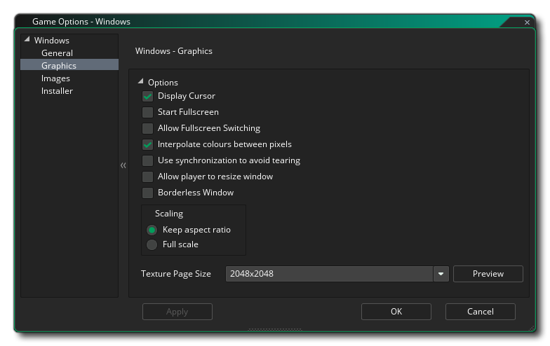
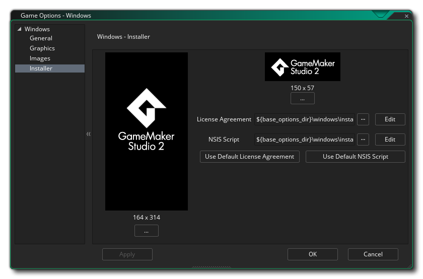

Cette section décrit les différentes options à votre disposition pour contrôler la compilation de vos projets de jeu Windows. Les différentes sections sont:
La page Général pour les jeux Windows est l'endroit où vous devez fournir les informations nécessaires à l'affichage de Windows lorsque votre jeu est installé et en cours d'exécution. Ces informations vont dans la section Informations sur le produit et doivent être complétées complètement.
La section Options de cette fenêtre vous permet de choisir où le paquet de jeu doit être installé, " %localappdata% " ou " %appdata% "dossiers, ainsi que si vous souhaitez définir Copy exe au dossier de sortie. En général, vous ne devriez jamais avoir besoin de cette option, mais elle est fournie aux utilisateurs disposant de plusieurs DLL qui communiquent entre eux et avec votre jeu. le jeu EXE dans le dossier de sortie lors du test, plutôt que de le placer dans le dossier Temp.
Ensuite, vous pouvez définir la marge de veille Windows. Cette option est liée à la réduction du bégaiement lorsque vous exécutez votre jeu sur des systèmes spécifiques. Fondamentalement, si votre jeu tourne plus vite que votre pièce, GameMaker Studio 2 "dormira" pendant le temps restant, mais ce sommeil peut être assez imprécis et vous pouvez souvent vous endormir plus longtemps que nécessaire, ce qui retardera provoque le bégaiement. Pour éviter ce problème, nous pouvons dormir moins longtemps, puis rester assis en boucle serrée le reste du temps pour le rendre plus précis - bien que le problème en restant assis en boucle soit que cela entraîne une augmentation de l'utilisation du processeur, ce qui peut à son tour augmenter la température de votre processeur et accélérer votre ventilateur. Par défaut, cette valeur est définie sur 10, et dans 99,99% des cas, cela vous convient. Toutefois, pour les ordinateurs bas de gamme ou pour les ordinateurs exécutant beaucoup de processus en arrière-plan, cette solution peut ne pas être idéale (ou pour très haut de gamme aussi) et une valeur de 1 ou 15 ou quelque chose peut être nécessaire. Notez bien qu'il s'agit en réalité d'une configuration spécifique au système et que ce qui fonctionne sur votre machine de construction peut ne pas convenir à un autre utilisateur. Par conséquent, en cas de doute, laissez-le sur 10.
La dernière option consiste à activer Steam pour votre jeu. Si vous activez cette option, assurez-vous que le kit de développement logiciel Steam fonctionne (voir ici ) et que vous avez ajouté l' identifiant de l'application Steam dans les options générales du jeu.

Les options graphiques sont celles que vous devez configurer pour déterminer comment votre jeu utilisera la carte graphique de votre PC Windows cible. Les options suivantes sont incluses pour que vous puissiez les modifier:
- Display Cursor: Lorsque cette case est cochée, le curseur Windows habituel sera affiché. Si vous cochez cette case, aucun curseur ne sera affiché à moins que vous n'en ayez créé un dans votre code de jeu. Ceci est activé par défaut.
- Démarrer en plein écran: Si cette case est cochée, le jeu démarrera en mode plein écran, sinon la fenêtre s’ouvrira. Ceci est désactivé par défaut.
- Autoriser le basculement en plein écran: cochez cette case pour permettre à l'utilisateur de passer du mode plein écran au mode fenêtré et inversement à l'aide des raccourcis Windows standard. Ceci est désactivé par défaut.
- Interpoler les couleurs entre les pixels: active l'interpolation, qui "lisse" les pixels. Pour les graphiques nets en pixels, il devrait être désactivé, mais si vous avez de beaux mélanges alpha et des graphiques lissés, il est préférable de laisser cette option activée. Cette option est activée par défaut.
- Utilisez la synchronisation pour éviter de vous déchirer: Ceci active ou désactive v-sync (v-sync est utilisé pour synchroniser la vitesse de mise à jour de votre jeu avec le taux de rafraîchissement du moniteur). Notez que si vous jouez avec une vitesse de pièce de 120 et que le joueur dispose d'un moniteur avec un taux de rafraîchissement de 60, l'activation de cette option bloquera également votre vitesse de jeu à 60. Ceci est désactivé par défaut.
- Autoriser le redimensionnement de la fenêtre: cette option permet à l'utilisateur de modifier la taille de la fenêtre de jeu (l'option Fenêtre sans bordure doit être désactivée pour que cela fonctionne). Cette option est désactivée par défaut.
- Fenêtre sans bordure: Cochez cette case pour que votre jeu fonctionne avec une fenêtre sans bordure, supprimant les boutons normaux de réduction, d'agrandissement et de fermeture ainsi que le titre du jeu. Ceci est désactivé par défaut.
- Mise à l'échelle: Ici, vous pouvez choisir de conserver le rapport hauteur / largeur (afin qu'une pièce 4: 3 soit encadrée sur 16: 9) ou de la redimensionner complètement (en étirant l'image pour l'adapter à tout l'écran).
ATTENTION! La désactivation de la surface de l’application désactivera toutes les options de redimensionnement définies dans les options de jeu Windows jusqu’à ce qu’elle soit réactivée. Voir La surface d'application pour plus de détails.Enfin, il est possible de définir la taille de la page de texture. La taille par défaut (et la plus compatible) est 2048x2048, mais vous pouvez choisir entre 256x256 et 8192x8192! Il existe également un bouton intitulé Afficher qui générera les pages de texture pour cette plate-forme, puis ouvrira une fenêtre afin que vous puissiez voir à quoi elles ressemblent. Cela peut être très utile si vous souhaitez voir comment les pages de texture sont structurées et éviter d’avoir des pages de texture plus grandes (ou plus petites) que nécessaire.
REMARQUE: sachez que plus la taille de la page de texture est grande, moins votre jeu sera compatible avec les PC dont les spécifications sont moins strictes.
La section images est l'endroit où vous fournissez les images nécessaires à votre jeu. Pour Windows, vous devez fournir un fichier d’icône (qui doit être au format .ico format) et un écran de démarrage (qui peut être .png, .bmp, .jpg ou .gif format). L'écran de démarrage apparaîtra pendant le chargement du jeu et peut être activé ou désactivé en cochant l'option Utiliser l'écran de démarrage (désactivée par défaut).
Il est à noter que GameMaker Studio 2 dispose d'un outil Project Image Generator qui permet de créer automatiquement toutes les images requises pour les différentes plates-formes cibles pour lesquelles votre jeu est compilé. Si vous utilisez cet outil, vous devez réviser les images créées pour vous assurer qu’elles correspondent à vos besoins.

Les jeux Windows peuvent être créés avec un programme d'installation. Vous pouvez y définir les différents paramètres et graphiques que GameMaker Studio 2 utilisera lors de sa création. Tout d’abord, nous avons les options graphiques qui définiront l’aspect de l’installateur lui-même:
- Terminé: Le graphique qui apparaît sur la page "Terminé" du programme d'installation. Doit être au format *.bmp et mesurer 164x314px.
- En - tête: Le graphique qui apparaît pendant l'exécution du programme d'installation. Doit être au format *.bmp et mesurer 150x57px.
Vous pouvez également indiquer un fichier de contrat de licence spécifique (un exemple est fourni avec GameMaker Studio 2 ) et un fichier de script NSI personnalisé (détails ici ) si vous en avez besoin, ou cliquez sur les boutons appropriés pour revenir aux fichiers par défaut fournis avec GameMaker Studio 2